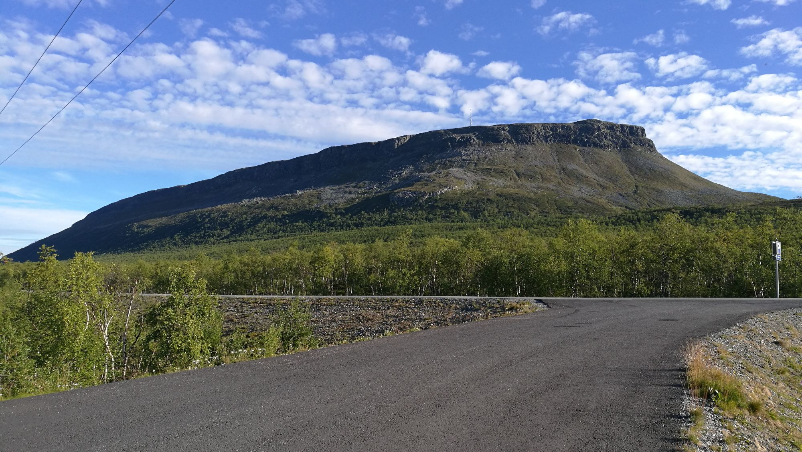

Kilpisjärvi-Halti-Kilpisjärvi (110km)

Suomen korkein kohta sijaitsee Haltilla, tarkalleen ottaen 1324 metriä merenpinnan yläpuolella, jonne ei yllä mailman pauhu. Kalottireittiin kuuluva Haltin vaellus lähtee Kilpisjärveltä ja yhdensuuntaisen matkan pituudeksi Haltin tuville päättyen tulee noin 55 kilometriä.
Edestakaisella, paikoin vaativalla vaelluksella kohtaat Haltin huipun lisäksi muitakin mieleenpainuvia luontoelämyksiä, kuten vaikuttavan Meekopahdan sekä Pihtsuskönkään, joka on yksi Suomen suurimmista ja kuuluisimmista vesiputouksista. Autio- ja varaustupia on matkan varrella sopivasti n. 10 km välimatkoin. Pitkälle Haltin vaellukselle kannattaa varata kunnolla aikaa ja siihen on hyvä valmistautua asianmukaisesti.
Hetta-Pallas (55km)
55 kilometrin pituinen Hetta-Pallas-reitti tarjoilee komeita tunturinäkyjä kerta toisensa jälkeen, aina välillä alas kuruihin laskeutuen. Vaelluksella muun muassa ohitetaan Pallastuntureiden korkein laki, 807 metriä korkea Taivaskero, jonne voit halutessasi poiketa ottamaan lähempää yhteyttä taivaankanteen.
Vaikka teltta kannattaakin pakata reitin suosion vuoksi mukaan, löytyy Hetta-Pallas-väliltä useita hyvinvarustettuja autiotupia. Hannukurun tupien yhteydessä, noin puolessa välissä reittiä pääsee halutessaan jopa saunaan, jossa vaelluksen väsyttämät jäsenet saavat uutta pontta seuraavaan retkipäivään. Reitti on hyvä aloittelijoille ja sen voi kävellä kummin päin tahansa. Joko Pallakselta Hettaan tai Hetasta Pallakselle.
Kevon reitti (63km)

Tämä Kevon luonnonpuiston upeissa rotkomaisemissa kulkeva reitti mutkittelee pääosin Kevon kanjonin laaksossa, mutta matkalla kuljetaan mös avotunturissa ja tunturikoivikoissa. Kysyttyä vaativuutta reitille tuo laskeutuminen osin yli 80 metriä syvän Kevon kanjonin pohjalle ja sieltä kerta toisensa jälkeen takaisin ylös.
Matkalle kannattaa myös varautua vedenpitävin varustein – reitillä kahlaat Kevojoen yli muutamaankin kertaan ja ihailet läheltä näyttävää Fiellun putousta. Alueen ainutlaatuinen luonto on tarkoin suojeltua, ja siksi Kevon luonnonpuistossa liikkuminen on rajoitettua ja siellä saa liikkua ja telttailla vain merkityillä paikoilla.